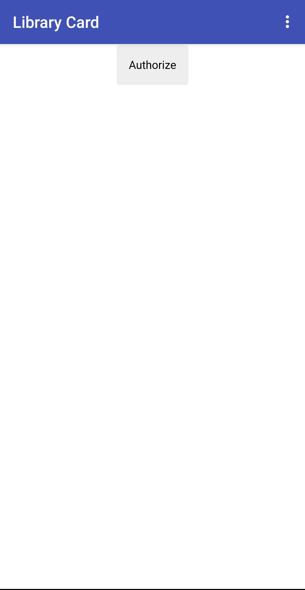
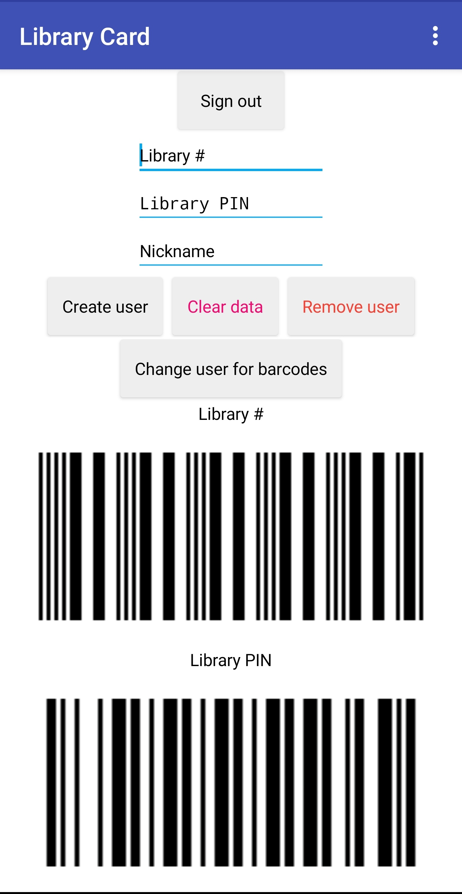

It looks like you've found the home of the unofficial Library Card app! Designed, tested, and used by me, Kendell, I would reccommend it! But before you get it, there arre some important things to go over.
First, liability. When you use the Library Card app, the chances actually decrease that somebody could steal the library card PIN! Why? Well, it's easy for somebody to see what you press on the keyboard, but it's harder for somebody to get their phones barcode scanner out and only scan the bottom one. Wait a minute... Oops! I need to show you some screenshots.
 